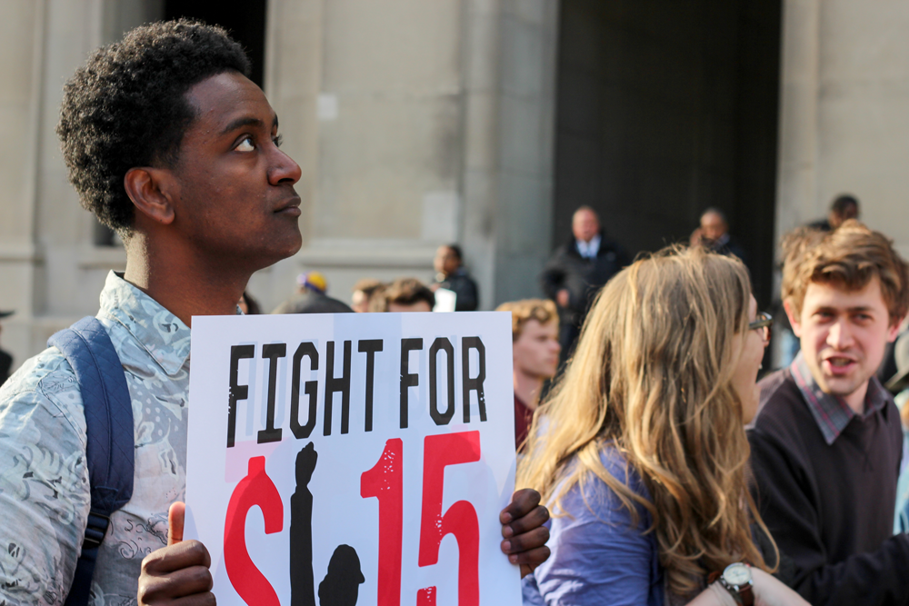
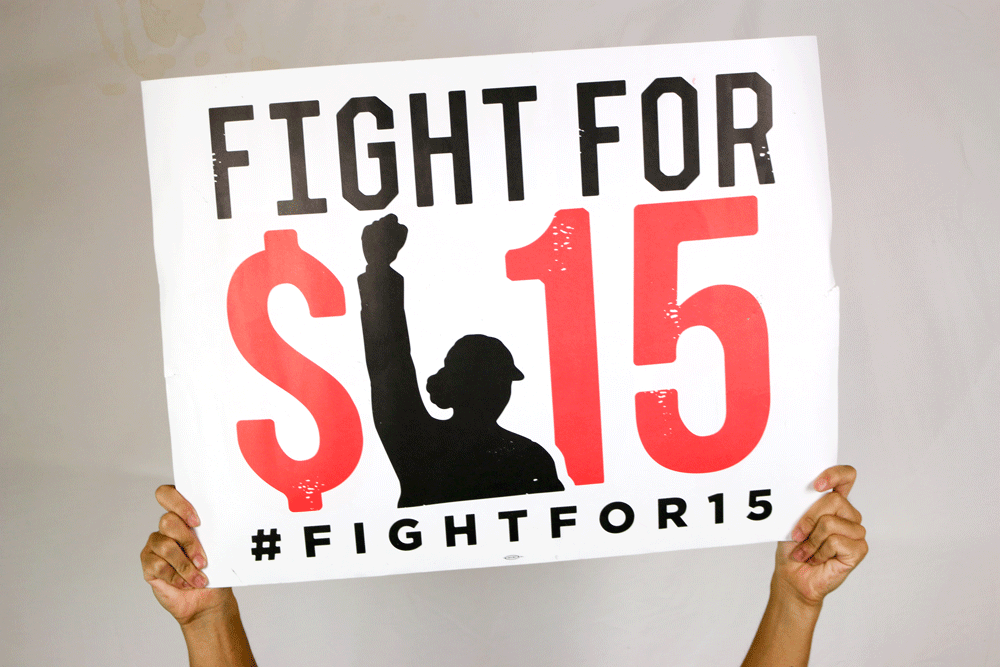
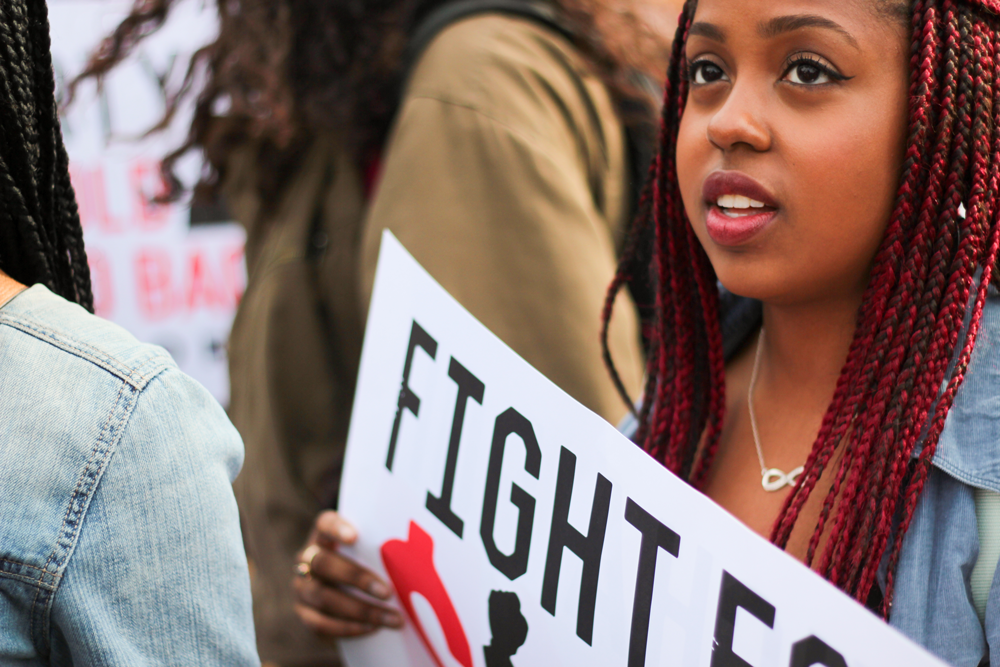
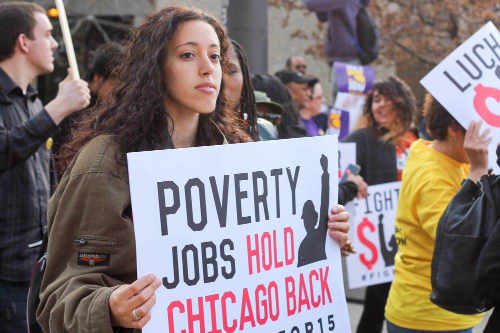

It’s April, and the NFL Draft is in Chicago for the first time ever. Millions of people came from all over the country to watch, but Zane Clarke Waxman (they/them/their) isn’t here as a spectator – they’re here as a protester, standing with students who aren’t just classmates, but fellow organizers.
Above their heads, posters read, “Student power over corporate greed.” Clarke Waxman joined more than 100 other students across the city in a protest challenging Roosevelt University’s financial aid policies, in an attempt to force the administration to acknowledge the misinformation given to marginalized students about financial aid. Some were asked to withdraw from the university because they couldn’t pay sufficient tuition, according to the Chicago Tribune.
In October, Roosevelt president Ali Malekzadeh apologized for the “inaccurate information” the university gave students, saying that the same mistakes would not be repeated.
“It’s very rewarding to see people who really don’t want to have to deal with the problems we’re talking about, forced to,” Clarke Waxman says.
For Clarke Waxman, organizing people and resources to create action like this is the only thing that ever has a tangible impact. Change happens when you get people to stand together and challenge corrupt institutions, Clarke Waxman says.
That’s how they got interested in IIRON, the Illinois and Indiana Regional Organizing Network, and then went on to be a founder of Northwestern’s IIRON chapter.
Dealing with systemic imbalances of power is not a new experience for Clarke Waxman, who grew up between multiple households in low-income and mixed-race families. They heard stories of a black step-grandfather who was denied work opportunities and forced into segregated communities after fighting in World War II as a Tuskegee Airman.
In 2010, Clarke Waxman came to Northwestern and began taking political science courses, learning about what they saw as corrupt campaign financing practices and what they now say is one root cause of inequality in America.
“I became very, very depressed,” Clarke Waxman says. “I felt like the challenges we face were insurmountable, as a species, as a planet.”
And so, after two years, Clarke Waxman took a break from Northwestern. They returned to Evanston in September 2013 with a newfound interest in community organizing.
They resumed classes in March 2014 just as IIRON was looking to grow at Northwestern. IIRON emphasizes the power of young people and uses collective action to challenge systemic issues. The IIRON Student Network (ISN) trains students by building chapters on Chicago-area campuses.
Clarke Waxman calls the timing “auspicious,” and maybe it was. ISNU wanted a Northwestern chapter; Clarke Waxman and a few of their friends were prepared to start organizing and creating action.
“It was exactly what we were looking for,” they say.
“A lot of people are able to eloquently describe these issues and the problems associated with them, but there is a lack of action. And that’s precisely the role that ISNU plays.” – Robel Worku
IIRON Students of Northwestern United (ISNU) wants to do more than just talk about issues; they want to organize. That means placing students in the heart of the NFL draft to get a university president’s attention. It means marching from Loyola to downtown Chicago to advocate for an increased minimum wage. It means encouraging Northwestern students to “carry the weight” by moving mattresses all across campus to raise awareness of sexual assault.
Members say dialogue can only go so far – at a certain point, change requires action. With Northwestern’s chapter of IIRON, students want to motivate others to attend actions because it’s “in their own self interest to be there,” says Weinberg senior Robel Worku, a leader of ISNU’s Black Lives Matter efforts.
“There are a lot of people on campus that are frustrated about social issues,” Worku says. “And a lot of people are able to eloquently describe these issues and the problems associated with them, but there is a lack of action. And that’s precisely the role that ISNU plays.”

Senior Robel Worku participated in the "Fight for $15" rally in downtown Chicago last spring. He says that ISNU plays a large role in translating words and feelings into concrete action.
Building a legacy
Emiliano Vera came to Northwestern wanting to make the world better. He joined student groups that seemed to “deliver that sense of doing good,” but dropped most by sophomore year when he realized they didn’t create an impact. When he walked into an IIRON meeting, he noticed the difference.
“It’s weird to say that the structure of the meeting turned me on to it, but they seemed serious,” says Vera, a Weinberg senior. “They seemed to have a personal interest and personal investment in people.”
Vera worked with Clarke Waxman to soldify IIRON’s role on campus. In the winter and spring of 2014, students started to participate in actions and discuss names for the Northwestern IIRON group, but they “didn’t have a structure as an organized institution,” Vera says.
In February, ISNU screened The Hand that Feeds, a film about injustice in the food service industry. In October, the group held a climate change rally on campus. In April, about 30 students went downtown to participate in the “Fight for $15,” a national movement to raise the minimum wage to $15.
“That was really exciting, because that was definitely the biggest action that we’ve mobilized for,” Vera says.

Some ISNU students demonstrated their support of raising the minimum wage by participating in “Fight for $15”. This is just one example of a movement that ISNU advocates for.
Raising minimum wage is just one of many systemic problems ISNU works to solve. In Winter Quarter 2014, ISNU worked with other student groups to protest during the height of sexual assault awareness movements.
Over the summer, they participated in IIRON-wide actions against Governor Bruce Rauner’s budget cuts through movements called Moral Mondays, taking over the streets of Chicago and occupying intersections. In October, they joined a Chicago action called “I Shocked the Sheriff,” confronting the International Association of Chiefs of Police about police brutality and violence against black people in the U.S.
“We’ve taken on several things, but we’ve been able to contribute at least something to everything we’ve taken on,” Vera says.
The concept of community organizing has been around since the 1930s. Saul Alinsky, a Jewish American writer, is known as its founder – his book Rules for Radicals is about taking power away from “the Haves” and bringing it back to “the Have-Nots” through grassroots movements.
To get more students involved, ISNU follows Alinsky’s methodology, recruiting primarily through one-on-one meetings with interested students to gauge where they fit into the movement.
Once people show significant interest in organizing, they are invited to attend daylong training sessions in Chicago. Members of ISNU describe these trainings as heavy, intense days where they’re forced to confront broad concepts like power and identity.
“It’s intended to provoke you a little bit, and to start engaging in more critical self-reflection,” Worku says.
Worku wants people to “stop admiring the problem.”
He first noticed demographic differences as a low-income black student attending a predominately white, wealthy private high school. Through ISNU, he says he’s had the opportunity to think more analytically about these cultural problems. He attended IIRON’s daylong training session in the spring and a weeklong training over the summer. He returned with a better understanding of organizing and how he fit into the picture.
“That was the first time I understood that there really was a stringent and well-thought-out methodology behind how they approach organizing,” Worku says. “It helped me understand how the organization worked to achieve its goals.”
Northwestern’s careerism, combined with many students’ race and class privilege, can create the feeling of a “reactionary” campus, Vera says. When Communication professor Laura Kipnis wrote about the power dynamics in student-teacher relationships, Northwestern students called for the University to reaffirm its Title IX policies.
ISNU aims to be more intentional than this by meticulously planning actions in a way that gets attention. For IIRON, the word “organize” describes gathering people and resources, but actions themselves require a deep level of organization to make sure they’re reaching the right people and being heard in the right places.
Part of the challenge of organizing is finding enough people to participate, but college campuses are the perfect place to find that energy, says Kristi Sanford, IIRON’s communications director.
“While students are in college and have the desire, time and energy to really think critically about what’s going on in the broader world, is the ideal time to be organizing,” Sanford says.


Actions can be physically taxing. People spend hours standing outside, sometimes in horrible weather, to make their voices heard. Northwestern students who participated in the Fight for $15 campaign took buses downtown, marched in Chicago and bused back to campus in between classes. But beyond the physical challenge, Vera says being part of a protest is difficult mentally, too.
“Is being out on the streets, marching, shouting slogans and being an inconvenience in other people’s lives actually doing anything? Because when you’re out there, sometimes it doesn’t,” Vera says.
Vera says that organizing and participating in actions is about realizing there’s a bigger picture. When people get together and stand in action, they make sure the world takes note.
“It’s not like we’re just showing up and shouting – and if we are, it’s not a very well-planned action.”
Inclusion at NU
In January 2013, a Northwestern maintenance worker came back to his office to find his black stuffed panda bear hanging from a rope as if it had been lynched.
Last May, Dr. Barnor Hesse, a professor in the department of African American Studies, withdrew his name from the senior’s “Last Lecture” vote because he thought his biography “reduce[d] [him] to a figure of amusement or curiosity” while other candidates were noted for their professional accomplishments.
And in August, the Department of Student Affairs proposed repurposing parts of the Black House – a building that has historically served as a safe space for black students – in order to create more offices for the Department of Campus Inclusion and Community (CIC).
“With how the University talks about diversity and inclusion and wanting to make this a priority, I’m very skeptical about the reason that CIC has to move there in the first place,” says School of Education and Social policy junior Matt Herndon. “Why can we not give CIC enough room to operate by themselves in the first place? CIC deserves a place of their own to operate.”
Herndon, who was previously more involved with ISNU, says the group increases awareness and education on campus through its events. One of his goals as the Associated Student Government VP of Accessibility and Inclusion is to put some of that responsibility on the University.
“A lot of times, students with marginalized identities on campus have to do the education themselves,” Herndon says. “Having to talk about why they feel marginalized, and why they feel oppressed, is not their responsibility as students. It’s not something that they should have to do – it can be exhausting.”
In September, Northwestern bolstered its offerings in CIC by forming a Social Justice Education (SJE) department, which aims to give students various co-curricular opportunities to start conversations about race and privilege on campus. Herndon hopes that Weinberg will soon have an educational requirement covering these topics so students can learn about thissues themselves. But Assistant SJE Directors Michele Enos and Noor Ali say implementing such a requirement isn’t easy.
“You can’t just take a course and get this stuff,” Ali says. “It helps plant the seed, but it’s definitely a culture, and something we’re hoping to build within our campus in numerous ways.”
Ali and Enos have many vehicles toward planting that seed. Sustained Dialogue and Peer Inclusion Educators are two programs where students are able to talk about backgrounds and biases, and use those conversations to change campus culture.
Finding where dialogue fits into action is where activism can get tricky. Some believe that the two cannot coexist, but Ali and Enos both say action is most useful when it’s combined with meaningful dialogue – when people recognize different aspects of their identities, whether that’s race, gender or economic status. Factoring self-awareness into issues of marginalization is key to changing the culture, Ali says.
Many of ISNU’s founding members are now seniors, and so, a huge focus is preparing underclassmen to carry the group forward, as well as recruiting more students to grow the organization.
For now, ISNU wants to create a bigger campus presence by gaining recognition not only from students, but administrators, as well. Enos and Ali both come from different universities, and say that Northwestern is a place where the administrators don’t necessarily talk about campus activism, but students do.
“I feel like Northwestern could do a better job of highlighting student activism on campus,” Enos says. “Knowing what I know about Northwestern ... I was very excited to see that student activism played such an important role on campus.”
But Enos also says that students have a lot of power at Northwestern. Students talking to administrators is what opened up the funding for her job. ISNU hopes to build on that type of action to get the University’s attention.
“It’s not like there’s a lack of knowledge – people know that Chicago is cutting the budget, that schools are being closed and that people of color are being killed by the police,” Worku says. “It’s just a question of the knowledge of organizations and campaigns that you can join with and potentially become leaders within to change those things. If we can adjust the culture in that way, that’ll be a big win for us.”